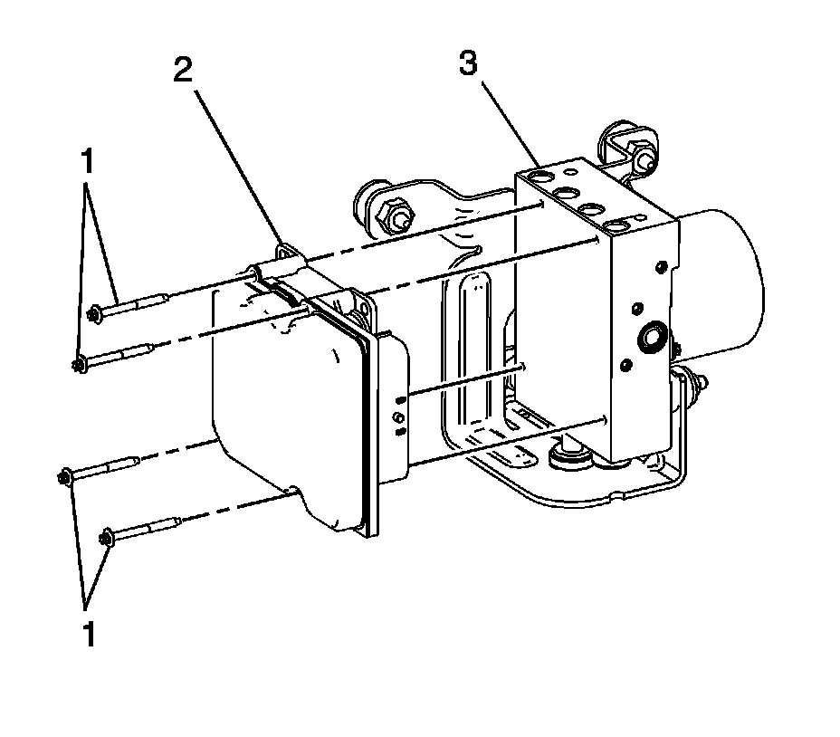

Electronic Brake Control Module Replacement (W/JL4)
Electronic Brake Control Module Replacement (W/JL4)
Removal Procedure
Caution: Refer to Brake Fluid Irritant Caution.
Notice: Refer to Brake Fluid Effects on Paint and Electrical Components Notice.
1. Raise and support the vehicle. Refer to Lifting and Jacking the Vehicle.
2. Remove all dirt and debris from the electronic brake control module (EBCM) and the brake pressure modulator valve (BPMV) before loosening or removing any of the components.
Important: DO NOT reuse the EBCM to BPMV screws. Install NEW screws.

3. Using denatured alcohol, clean the EBCM (2) and the BPMV (3).
4. Disconnect the EBCM electrical connector.
5. Remove and discard the EBCM to BPMV screws (1).
6. Carefully pull the EBCM (2) from the BPMV (3).
7. Remove the EBCM to BPMV gasket.
Installation Procedure
1. Position the gasket to the BPMV (3).
2. Position the EBCM (2) to the BPMV (3).
Important: Make sure the EBCM is properly aligned to the BPMV, including the brake pressure switch. Do not force the components together.
3. Push the EBCM squarely onto the BPMV.
Notice: Refer to Fastener Notice.
4. Install 4 new EBCM to BPMV screws (1).
Tighten the screws in a X pattern to 3 N.m (27 lb in).
5. Connect the EBCM electrical connector.
6. If installing a replacement EBCM, program the replacement EBCM. Refer to Control Module References.
7. Bleed the BPMV. Refer to Antilock Brake System Automated Bleed Procedure (W/JL4) Antilock Brake System Automated Bleed Procedure (W/O JL4).